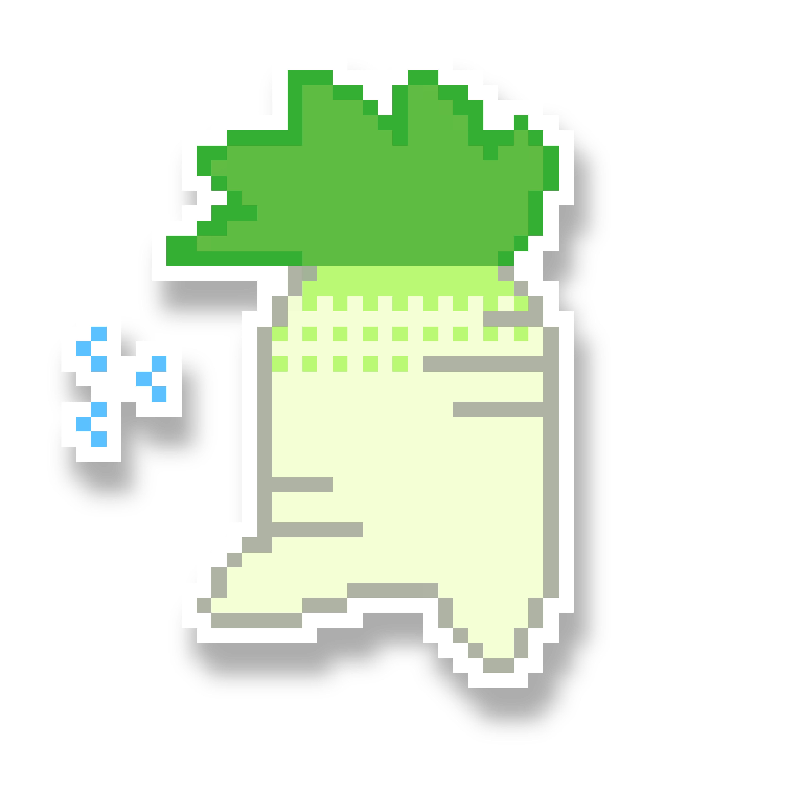
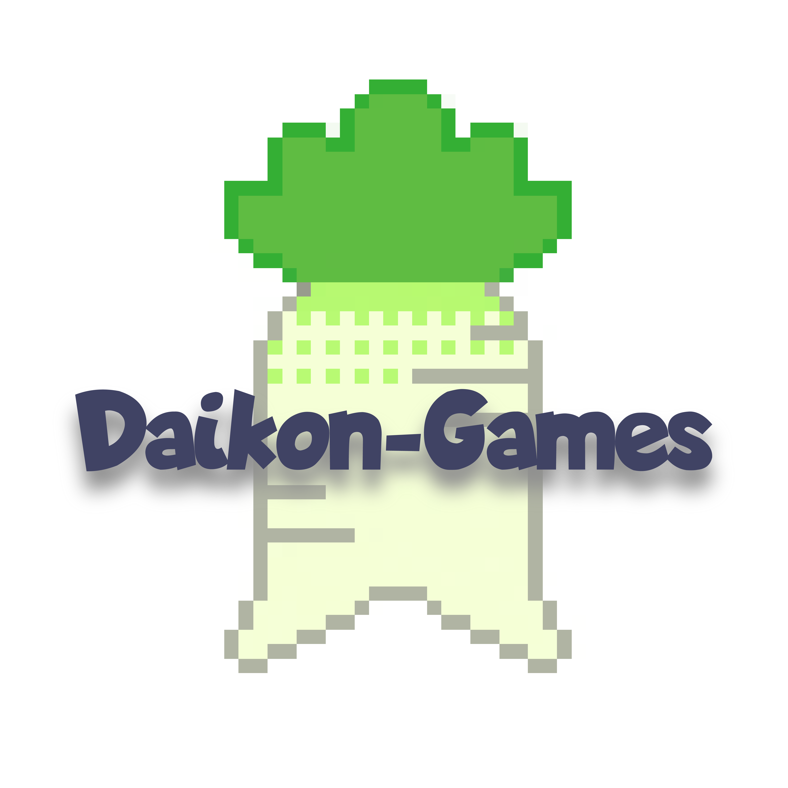
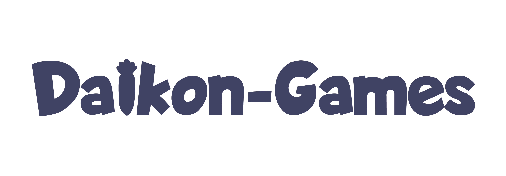
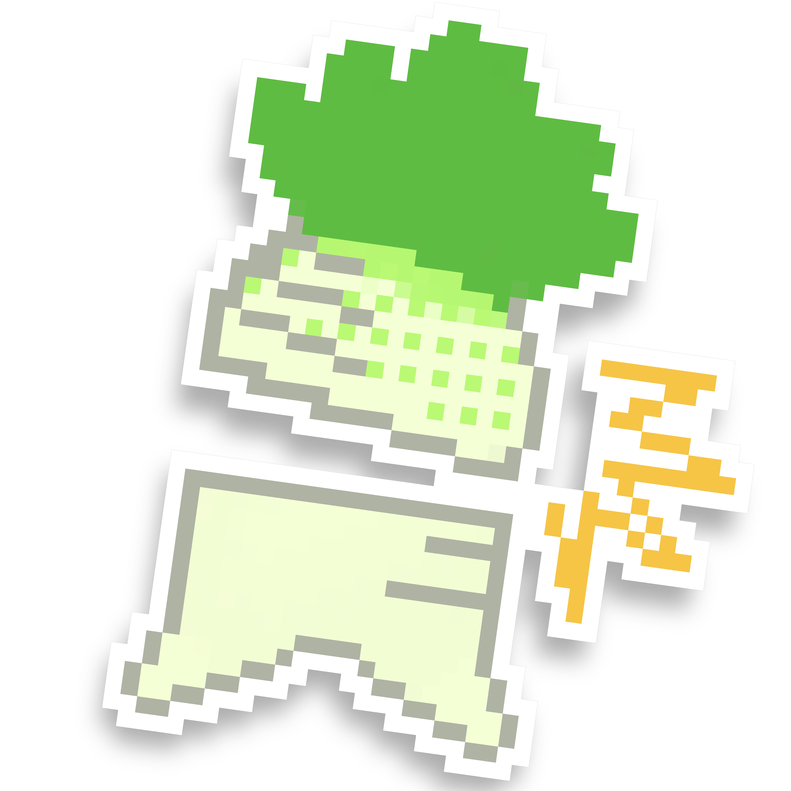
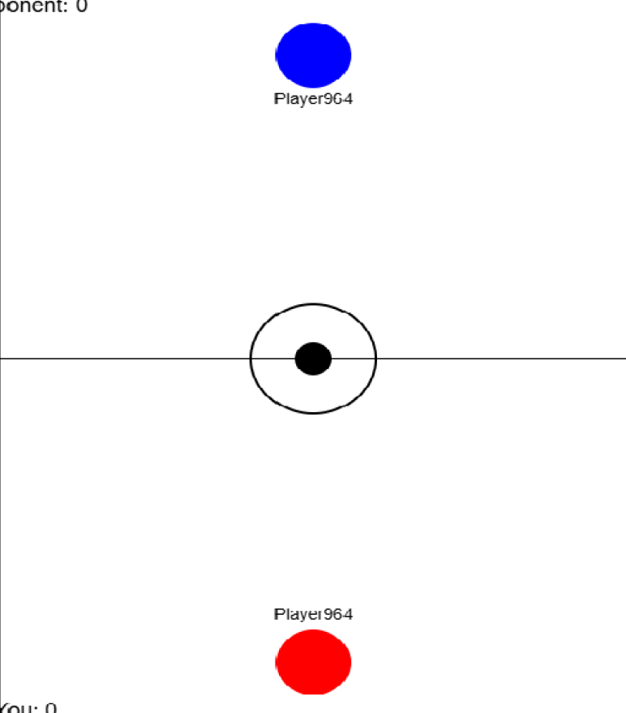

Dino Game
Air Hockey
game 3...
Nagato
Sakura
Programming, UI, UX, game director
UI/UX design, game arts
We are two college students who combined our skills—one specializing in programming, the other in design—to create a platform that brings interactive gaming to life. We started this as a project that would utilize both of our skills. Now, we aim to continue developing games that are engaging and visually refined to share through this website.

daikongames@gmail.com
@daikongames1234
Contact us!



About Us:
Recreation of
Online Air-Hockey Game:
Online Air-Hockey Game (click here to play)
Replica of the
Chrome Dino Game:
Chrome Dino Game (click here to play)

As a follow-up, we developed an online multiplayer air hockey game to tackle the challenges of real-time synchronization and live player interaction. This project features smooth paddle dynamics, friction-aware puck movement, and responsive collision handling—all powered by custom physics logic. The most demanding aspect was creating reliable server-client communication to ensure seamless multiplayer gameplay without jitter or desync, especially during fast-paced exchanges. This project demonstrates my ability to architect performant networked game systems, laying the groundwork for more advanced multiplayer challenges.
We started our web game development journey with recreating the Chrome Dino game, but with the daikon radish, chosen for its simplicity and customizability as an ideal starting point. This project allowed us to focus on building a modular and responsive game loop to recreate the simple, yet engaging game experience. We implemented physics-based mechanics for jumping and collision detection, ensuring smooth synchronization of movements across frames, as well as the obstacles like the FILL(redesigned cactus) and the FILL(redesigned birds) to create our version of the Dino game.
Our Projects: